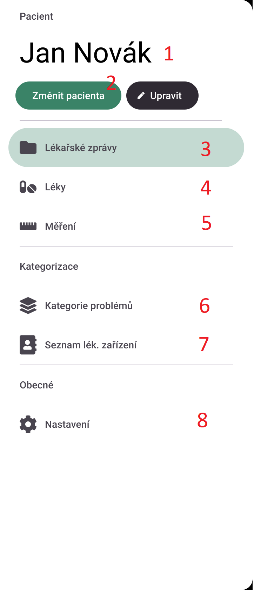
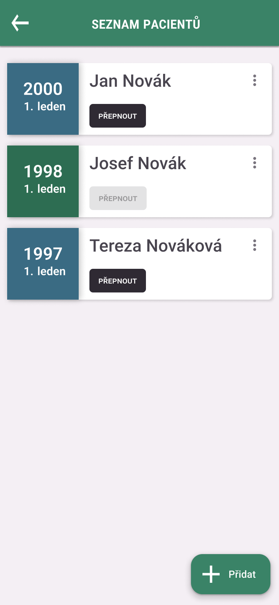

PHR je mobilní aplikace pro zařízení Android. Aplikace umožnuje správu lékařských správ - přidání, úprava, uchovávání ve skupinách. PHR nabízí možnost načtení základních informací z fotografie lékařské zprávy.
Tento produkt nabízí plnohodnotnou správu léků pacienta - od plánování, dávkování až po itinerář. Uživatel si může snadno přidávat léky, které musí užívat, a přizpůsobit si frekvenci a dávkování podle svých potřeb. Navíc, aplikace upozorní uživatele před bráním léku, aby nezapomněl svou dávku.
Dále tento produkt umožňuje uchovávat měřená data pacienta, jako jsou hmotnost, teplota, krevní tlak a další. Uživatel si může vytvořit vlastní typ měření s vlastními hodnotami a přidat k nim fotografie. S touto funkcí bude moci uživatel sledovat svůj zdravotní stav a snadno se o něj dělit se svým lékařem.
Aplikace nenese žádnou odpovědnost za přesnost složení léků. Složení vždy konzultujte se svým lékařem.
Mobilní telefon
Internetové připojení je využíváno pro vyhledávání léků, příbalových letáků a diagnóz. Aplikaci lze využívat i bez připojení.
Veškerá vaše data jsou uložena pouze ve vašem zařízení, nikdy nejsou přenášena na naše servery
Po instalaci aplikace Vás vyzve k přidání prvního pacienta. Po přidání pacienta se Vám zobrazí hlavní menu aplikace. Popis hlavního menu:

Všechny změny provedené v aplikaci jsou uloženy pouze v zařízení. Pokud dojde k odinstalování aplikace či poškození zařízení, všechna data budou ztracena.
Aplikace nabízí možnost přidání neomezeného počtu pacientů, vždy je ale vybrán pouze jeden pacient, pro kterého jsou prováděny změny. Přidání pacienta je možné provést dvěma způsoby:

Pro úpravu pacienta rozklikněte nabídku pro více akcí (tři svislé tečky) a vyberte "Upravit". Další postup je totožný s "5.1.2 Přidání pacienta přes správu pacientů".
Pokud se rozhodnete pacienta smazat, můžete tak učit rozkliknutím nabídky pro více akcí (tři svislé tečky) a vybráním "Smazat". Po potvrzení smazání pacienta budou smazány všechny jeho lékařské zprávy, léky a měření. Tato akce je nevratná.
Pro změnu aktuálního pacienta klikněte na tlačítko "Přepnout" u vámi zvoleného pacienta. Po přepnutí se tlačítko vypne a u ostatních pacientů se objeví tlačítko "Přepnout". Aktuální pacient je označen zeleným rámečkem.
Na stránce "Lékařské zprávy" se zobrazují všechny lékařské zprávy aktuálně vybraného pacienta. Lékařské zprávy jsou odděleny dle aktuálně vybraného seskupování (výchozí seskupování je dle data).
Každá lékařská zpráva je tvořena boxíkem s následujícími informacemi:
Barva boxíku lékařské zprávy závisí na kategorii problémů a je upravitelná uživatelem.
Filtrování zpráv je možné ze stránky "Lékařské zprávy". Pro filtrování klikněte na tlačítko v pravém dolním rohu obrazovky. Otevře se okénko s možnostmi filtrování. Pro provedení filtru klikněte na tlačítko "Filtrovat". Pro zrušení filtru klikněte mimo okénko.
Možnost "Seskupit dle" určuje, dle čeho se budou lékařské zprávy seskupovat. Možnosti jsou:
Možnost "Kategorie problému" umožňuje vypisování pouze těch zpráv, které mají přiřazenou danou kategorii problému. Ve výchozím stavu jsou zaškrtnuté všechny. Seznam je tvořen dynamicky podle kategorií, které jsou použity.
Možnost "Lékaři" umožňuje vypisování pouze těch zpráv, které jsou vydány daným lékařem. Ve výchozím stavu jsou zaškrtnuti všichni lékaři. Seznam je tvořen dynamicky podle lékařů, kteří vydali lékařské zprávy.
Lékařskou zprávu je možné přidat ze stránky "Lékařské zprávy".
Pokud se vám při vyhledávání diagnóz zobrazují jen už přidané diagnózy, je pravděpodobné, že se aplikaci nepodařilo připojit k internetu. Zkontrolujte připojení k internetu a zkuste to znovu.
Pokud se vám zobrazuje tato chyba, je pravděpodobné, že aplikace nemohla uložit vaše přílohy. Zkontrolujte, zda má aplikace povolené oprávnění pro ukládání souborů. Pokud ne, povolte oprávnění a zkuste to znovu.
Nového pacienta můžete přidat ze stránky "Pacienti". Klikněte na tlačítko "Přidat" v pravém dolním rohu obrazovky. Vyplňte formulář a klikněte na tlačítko "Přidat". Viz 6.1 Přidání pacienta.
V současné chvíli aplikace tuto možnost nepodporuje. Pokud chcete pracovat s jiným pacientem, musíte se odhlásit a znovu přihlásit.
V seznamu lékařských zpráv se zobrazují pouze zprávy, které jsou přiřazeny k aktuálnímu pacientovi. Pokud chcete zobrazit zprávy jiného pacienta, musíte se odhlásit a znovu přihlásit. Zkontrolujte také, že není zapnuto filtrování. Viz 7.2 Filtrování.
Aplikace nepodporuje přidávání vlastních diagnóz. Diagnózy v aplikaci jsou dle MKN-10 a jsou načítány z internetu. Pokud chcete seskupit zprávy, můžete využít kategorie problémů.
Novou kategorii problému můžete přidat ze stránky "Kategorie problémů". Klikněte na tlačítko "Přidat" v pravém dolním rohu obrazovky. Vyplňte formulář a klikněte na tlačítko "Přidat"
Aplikace shromažďuje data spojená s vyhledáváním diagnóz a léků. Mimo vyhledávaný výraz uchováváme vaši IP adresu pro funkční zajištění aplikace.